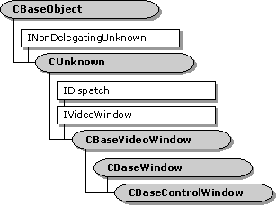

description: The CBaseControlWindow class implements the IVideoWindow interface and controls external access to its associated filter. ms.assetid: 3657ba24-ffaa-491f-9eb3-f9913d5d421a title: CBaseControlWindow class ms.topic: reference ms.date: 4/26/2023 topic_type:
[The feature associated with this page, DirectShow, is a legacy feature. It has been superseded by MediaPlayer, IMFMediaEngine, and Audio/Video Capture in Media Foundation. Those features have been optimized for Windows 10 and Windows 11. Microsoft strongly recommends that new code use MediaPlayer, IMFMediaEngine and Audio/Video Capture in Media Foundation instead of DirectShow, when possible. Microsoft suggests that existing code that uses the legacy APIs be rewritten to use the new APIs if possible.]

The CBaseControlWindow class implements the IVideoWindow interface and controls external access to its associated filter. You must synchronize the CBaseControlWindow object with the filter by passing it a pointer to a critical section synchronization object. The CBaseControlWindow class provides a number of methods that return property settings without dealing with this critical section. For example, calling CBaseControlWindow::get_AutoShow to retrieve the value of the m_bAutoShow data member locks the critical section. The filter might already have a locked internal critical section, however, which could violate the filter's lock hierarchy. Instead, calling the CBaseControlWindow::IsAutoShowEnabled member function returns the required value without affecting the critical section.
All CBaseControlWindow implemented IVideoWindow methods require that the filter be connected correctly with its upstream filter. For this reason, class objects require a synchronization pin, which you set by calling the CBaseControlWindow::SetControlWindowPin method. Whenever you call an IVideoWindow method, the CBaseControlWindow object checks that the pin is still connected.
| Protected Data Members | Description |
|---|---|
| m_bAutoShow | Result when the state changes. |
| m_bCursorHidden | Determination of whether the cursor is displayed or hidden. |
| m_BorderColour | Color of the current window border. |
| m_hwndDrain | Window handle to which messages received are posted. |
| m_hwndOwner | Owning window. |
| m_pFilter | Pointer to the owning media filter. |
| m_pInterfaceLock | Externally defined critical section. |
| m_pPin | Control of the media types for connection. |
| Member Functions | Description |
| CBaseControlWindow | Constructs a CBaseControlWindow object. |
| DoGetWindowStyle | Retrieves either the typical or extended window styles. |
| DoSetWindowStyle | Sets the typical or extended window styles. |
| GetBorderColour | Retrieves the current border color. This is a helper member function. |
| GetOwnerWindow | Retrieves the owning window. This is a helper member function. |
| IsAutoShowEnabled | Retrieves information about whether the video window automatically appears when the rendering filter pauses or runs. |
| IsCursorHidden | Retrieves the current state of the m_bCursorHidden data member without locking the critical section. This is a helper member function. |
| PossiblyEatMessage | Distributes messages to the parent window. |
| SetControlWindowPin | Notifies the object of the pin to which it applies. |
| IVideoWindow Methods | Description |
| get_AutoShow | Retrieves the current AutoShow flag setting. |
| get_BackgroundPalette | Retrieves the realized palette in the background flag. |
| get_BorderColor | Retrieves the current border color. |
| get_Caption | Retrieves the current window caption. |
| get_ FullScreenMode | Retrieves the current full-screen mode. |
| get_Height | Retrieves the current window height. |
| get_Left | Retrieves the current left window coordinate. |
| GetMaxIdealImageSize | Retrieves the maximum size of the ideal image. |
| get_MessageDrain | Retrieves the current message drain. |
| GetMinIdealImageSize | Retrieves the minimum size of the ideal image. |
| get_Owner | Retrieves the parent window handle. |
| GetRestorePosition | Retrieves the position to which the window will be restored when maximized or minimized. |
| get_Top | Retrieves the y-coordinate for the top of the window. |
| get_Visible | Retrieves the current visibility setting of the window. |
| get_Width | Retrieves the width of the window. |
| GetWindowPosition | Retrieves the current window coordinates. |
| get_WindowState | Retrieves the current state of the window. |
| get_WindowStyle | Retrieves the standard window styles. |
| get_WindowStyleEx | Retrieves the extended window styles. |
| HideCursor | Hides or displays the cursor. |
| IsCursorHidden | Retrieves the current state of the m_bCursorHidden data member. |
| NotifyOwnerMessage | Passes on messages that are sent to owning windows. |
| put_AutoShow | Sets the AutoShow property. |
| put_BackgroundPalette | Sets a flag to realize the palette in the background. |
| put_BorderColor | Sets the current border color. |
| put_Caption | Sets the current window caption. |
| put_ FullScreenMode | Sets the full-screen mode. |
| put_Height | Sets the current window height. |
| put_Left | Sets the left coordinate for the window. |
| put_MessageDrain | Sets the message drain window. |
| put_Owner | Sets the Microsoft Win32 parent window handle. |
| put_Top | Sets the position for the top of the window. |
| put_Visible | Hides or shows the window. |
| put_Width | Sets the width of the window. |
| put_WindowState | Sets the state of the window. |
| put_WindowStyle | Sets the standard window styles. |
| put_WindowStyleEx | Sets the extended window styles. |
| SetWindowForeground | Sets the window in the foreground. |
| SetWindowPosition | Sets the window position. |
Â
Â
Â